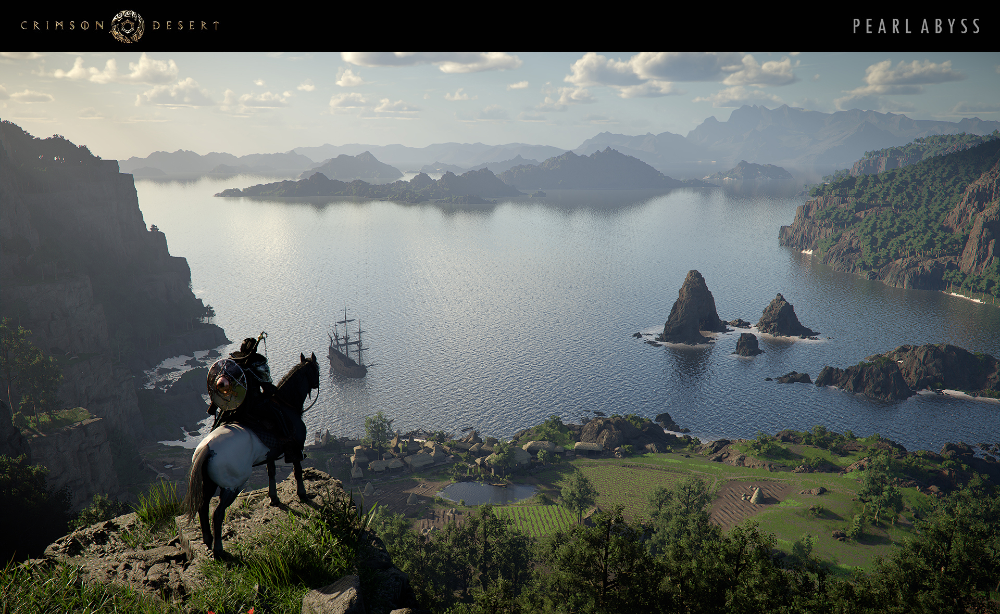

An independent fan newspapercrimsonreporthub.com
Crimson Desert Report Hub
NewsPatch notesPlayer reports

The stories behind
the updates.
Original reports. Official sources.
A closer look at Crimson Desert.
Unofficial · Fan-runGame imagery © Pearl Abyss